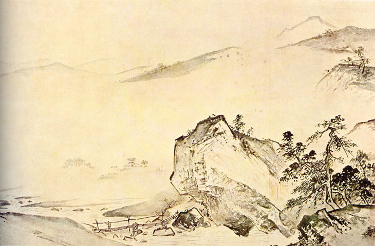

Voyage en Chines
- Premier jour
- A Taïpei 台北
- Sud de l'île
- Arrivée sur Tainan 台南
- Anping 安平
- Dernières heures à Tainan
- Sandimen 三地門
- Liuchiu 琉球
- Jia yi et Zhuang hua 嘉義 還 彰化
- Lugang鹿港
- Vers Hong Kong香港
Premier jour
Introduction
Pour ceux d'entre vous qui l'ignoreraient, je suis allé à Taïwan 臺灣, signifie en Chinois quelque chose comme «Plate-forme sur le golfe» pour une conférence (ICASSP) dans le cadre de mon doctorat. Après cette conférence, j'ai visité l'île pendant 8 jours et Hong Kong 香港 ( «port parfumé») l'espace d'un week-end. Ayant apprécié mon voyage, j'ai pensé que mettre en ligne mes impressions et quelques anecdotes serait intéressant. Dès que j'ai su que mon article était accepté à cette conférence, j'ai décidé d'apprendre un peu de Chinois. J'avais l'impression, et ce sera confirmé lors de mon voyage, que faire l'effort d'apprendre la langue locale donnera une autre dimension à mon voyage, me permettant en particulier de voyager en dehors de la capitale, Taipei 臺北 (北 pour Nord), la seule ville où les gens parlent anglais correctement. Fidèle à la politique二個中國 j'apprends les caractères chinois traditionnels (ceux utilisés à Taiwan) et le système de romanisation de la Chine continentale (pinyin 拼音).
Vol Toronto-Taïpei
Taiwan étant situé exactement de l'autre côté du monde (12 heures de décalage horaire), la durée du trajet s'en ressent (un peu plus de 15 heures). La qualité du service à bord de Cathay Airlines adoucit cependant cette séclusion prolongée. Quelques magnifiques vues aériennes agrémentent le voyage: lors d'un passage au dessus des montagnes de glace du Groenland avec un ciel sans nuage ou l'arrivée dans la baie de Hong Kong, où l'océan a une teinte particulière, presque verte, en harmonie avec des îlots épars et boisés. Quelques jonques de pêcheurs (perdues au milieu des porte-conteneurs) complètent le tableau.

Arrivée à Taïpei
Il est temps de prendre mon avion pour Taipei. Le regard respirant l'intelligence de plusieurs passagers occidentaux me fait penser que je ne suis pas le seul de l'ICASSP. Arrivée à Taipei. Rien de notable à raconter mis à part qu'un douanier un peu zélé agrafe sans le vouloir mon visa étudiant canadien que je ne peux maintenant plus déplier. Dans le hall de l'aéroport, je me termine vers le terminal de bus. Tout est écrit en Chinois. Je remarque avec amusement que quelques occidentaux qui comptaient aussi prendre le bus se replient prudemment sur les taxis. Voulant mettre en pratique le peu de chinois que je connais, je m'avance et demande un ticket pour mon hôtel 圓山大飯店.Miracle, j'arrive à me faire comprendre. Dans le bus qui m'amène à l'hôtel, mon regard découvrant la ville s'arrête sur deux curiosités. Tout d'abord un hôtel surmonté d'une croix en forme de svastika. Même si le sens est opposé, difficile de ne penser à une croix gammée. Deuxième chose, tout à coup, au milieu d'un boulevard apparaissent quelques vendeuses de noix de Bétel 檳榔西施 (dont les rares habits ne dissimulent que partiellement les formes, qu'elles ont d'ailleurs fort charmantes). Bien que connaissant cette coutume locale, je suis quand même assez surpris.Arrivée à l'hôtel. Un havre de luxe où se pressent hommes d'affaires japonais et touristes américains fortunés. Tout à fait mon environnement quotidien. Les réceptionnistes semblent parler anglais correctement, mais ce n'est qu'une façade. Les différents employés ont un emploi en accord avec leur maîtrise de l'anglais (et du japonais pour la plupart). Hiérarchie: réceptionnistes, concierges, grooms, personnel de chambre, employés de l'ombre. Ils sont cependant d'une politesse exquise. L'hôtel, à l'architecture typiquement chinoise avec son toit caractéristique, se veut un hommage à la culture chinoise. Des œuvres d'art traditionnel sont exposées un peu partout. A peine rafraîchi, je sors de l'hôtel pour découvrir la ville et dîner. Au détour d'une rue, je tombe sur un magasin dont l'affiche annonce Carcassonne . (Pour ceux qui l'ignoreraient, je suis né à Carcassonne de mère carcassonnaise et de père... putatif). Surprenant. Le magasin étant fermé, je m'y promets d'y retourner. Beaucoup de scooters dans la rue, avec le bruit correspondant. Et leurs conducteurs n'hésitent pas à rouler sur les trottoirs pour gagner du temps.
A Taïpei 台北
Gorges de Taroko太魯閣
Départ à 5h20 du matin pour une des sept merveilles de l'Asie située à côté de Hualian 花蓮 («fleur de lotus» ). Parmi les participants à ce voyage organisé, les ICASSPiens sont encore majoritaires. Je sympathise avec Merhdad, un Iranien étudiant à Edimburgh et quelques italo-espagnols. Il y a aussi un couple âge de Taîwanais qui parlent assez bien le français. Ils accompagnent quelques amis à eux. Le mari, un professeur de médecine probablement arrivé enfant à Taïwan, me dit tout le mal qu'il pense des Chinois continentaux, les communistes comme il les appelle. Et surtout qu'ils ont perdu toutes leurs valeurs morales. Il a sans doute en partie raison. Le paysage est magnifique, entre océan et montagne. Un lien pour les photos de Merhdad.
C'est d'ailleurs en sa compagnie que je m'égare quelques dizaines de minutes. Le guide nous retrouve finalement. Nous nous arrêtons pour un thé dans une échoppe au milieu des gorges. Le thé aux bleuets et aux roses est le meilleur que je n'aie jamais bu. Les serveuses sont d'une beauté stupéfiante: de grands yeux brillants, le teint assez clair, le front fier. J'interroge la guide, une Chinoise, qui confirme mon intuition: ce sont des aborigènes, les habitants originels de Taïwan avant l'arrivée des Chinois au XVIè siècle qui représentent à peine 2% de la population actuelle. Pour les passionnés de linguistique, un article trés intéressant . Elle me dit aussi que ces aborigènes sont réputés pour leur beauté. Je confirme.
Fin de la visite: piège à touriste. La guide nous emmène vers une usine de marbre totalement inintéressante puis vers un magasin de marbre et jade où nous poireautons pendant 2 heures. Je la soupçonne de percevoir une commission sur les ventes. Finalement, estimant que nous avons assez dépensé, elle nous libère. Avant de repartir, nous nous arrêtons dans un magasin de gâteaux aborigènes. Je goûte aux piments locaux. Ils réveilleraient un mort. Retour vers Taipei en train, trop tard pour le dîner de la conférence auquel je comptais assister.
Musée National du Palais
Lever tôt le matin, direction le musée national du palais. Ce musée, égal au Louvre par la qualité de ses pièces, présente une grande variété d'objets de la collection personnelle des empereurs Mandchous en provenance de la Cité Interdite. L'histoire des collections de ce musée est aussi assez mouvementée,voir là . Plusieurs oeuvres peuvent être admirées ici . Quelques objets qui m'ont particulièrement plu:
Barque miniature gravé dans le noyeau d'une olive
Artefact bouddhiste
 La jade dite du chou, une des pièces les plus célèbres du musée. La photo ne rend pas la richesse des couleurs
Jade circulaire 璧, objet religieux dans la Chine antique
Peinture traditionelle
Il y a une pièce qui m'a beaucoup impressionné mais dont je n'ai pas de photos. Une bannière où est dessiné le caractère 壽 de 128 manières différentes. La plupart des objets sont assez récents, des dynasties Qing ouMing. Malgré tout, quelques belles pièces plus anciennes. Ce que j'ai trouvé le plus intéressant est de voir l'évolution du système d'écriture. Je suis arrivé au musée dès l'ouverture à 9h pour y rester jusqu'à la fermeture. La plupart des visiteurs semblent être des Chinois continentaux. Le musée est très bruyant à cause d'eux puisqu'ils n'hésitent pas à crier, s'apostropher à voix haute au milieu des galeries. De plus, je visite le musée un Dimanche ce qui n'arrange pas les choses. Une autre différence entre continentaux et Taïwanais. Comme le confirmeront les réceptionnistes de l'hôtel «We can't control them, they are too noisy». Autre détail intéressant, à l'ouverture je suis le seul occidental. La plupart d'entre eux arrivent au milieu de l'après-midi. La plupart d'entre ne paient pas attention aux collections, se contentent d'un vague coup d'œil avant de passer à la salle suivante. Des barbares. Un rapide crochet ensuite vers la résidence de Tchang Kai Chek et de son épouse. Un parc boisé assez agréable mais noir de monde. Le soir, retour vers ce mystérieux magasin carcassonnais. Il est ouvert par chance. Je rentre et raconte au vendeur que je suis né à Carcassonne, passeport à l'appui. Il est hilare et sympathique. Nous discutons un peu, il se propose de m'aider si j'ai besoin d'aide à Taipei. Photos du magasin ci-dessous. Dernière chose, je visite quelques temples chinois et me balade dans le vieux quartier de la ville. Pour le dîner, direction un restaurant coréen pour comparer leur bulgogi avec celui de mes amis canadiens.
Conférence
L'organisation de la conférence est impressionnante, une histoire de face pour les Taïwanais? La cérémonie d'accueil commence avec une danse aborigène. Ensuite, mot d'accueil du président de Taïwan National University avec ma citation préférée* de Confucius:
N'est-ce pas agréable d'avoir des amis venant de loin
Ensuite, remise des prix et autres distinctions. La plupart des titres honorifiques récomponsant une carrière sont attribués à des Américains ou Européens assez âgés. Presque tous les prix pour jeunes auteurs sont raflés par des Asiatiques. Passage de témoin entre continents.
Un aspect notable de la conférence est la qualité du petit-déjeuner qu'ils offrent. Des dimsu (raviolis à la vapeur) 點心 et d'autres plats chinois délicieux. Un jour, je discute avec des Américains du MidWest qui s'empiffrent d'œufs brouillés et de saucisses. Je rencontre un Sri-Lankais original qui a fait son doctorat à Singapore, a travaillé au Japon avant de devenir professeur dans une université à Brunei. Au premier abord sympathique mais le lendemain, alors que nous discutions de politique, il nous dit que la situation des Tamouls au Sri-Lanka est normale et qu'ils se plaignent pour rien (faut-il préciser qu'il est singhalais?). Après cet incident, je l'évite de mon mieux. Je croise aussi un Egyptien de l'université de Darmstadt (qui a d'ailleurs très bonne réputation). Il est tout surpris de ma connaissance de la ville. Motivé par des motifs peu avouables (trouver un moyen de ne pas payer d'hôtel lors de mon futur voyage à Hong Kong), je sympathise avec une Chinoise de l'université HK Polytechnique. Son anglais est approximatif, mais un contact utile pour un futur séjour à Hong Kong! Je discute avec deux ou trois Chinois du continent, travaillait en Amérique ou en Chine. Nous discutons de politique. Leurs opinions sur Taïwan sont assez partagées. S'ils reconnaissent la beauté de l'île et la richesse de ses musées, leurs avis sur Tchang Kai Check et sur l'indépendance de Taïwan diffèrent. Par exemple, une professeur enseignant en Chine me dit, qu'à son avis, si les nationalistes avaient gagné contre les communistes, la Chine serait bien plus forte aujourd'hui qu'elle ne l'est. Un autre, Canadien d'adoption, me dit avoir visité le mémorial du père de la nation et qu'à son avis il ne reflète pas l'opinion de la majorité des Taïwanais qui, d'après lui, ont une opinion plutôt défavorable du leader nationaliste.
Un soir, en rentrant de la conférence, je croise une délégation de moines bouddhistes dans mon hôtel. Des dignitaires de haut rang, venus de Chine continentale pour une raison quelconque. Les plus jeunes d'entre eux arborent quelques sacs comme s'ils sortaient d'une après-midi shopping. Les moines bouddhistes sont censés vivre une vie simple et mépriser les plaisirs matériels. C'est pourquoi j'ai été choqué de leur présence dans cet hôtel de luxe alors qu'ils auraient pu tout aussi bien passer se faire héberger dans un temple quelconque. Le Sri-Lankais susnommé (un Bouddhiste) m'a confirmé qu'il avait trouvé leur présence dans l'hôtel non seulement incongrue mais également choquante. Est-ce que les hauts dignitaires religieux venant de la Chine communiste prennent quelques libertés avec la morale?
Rien d'autre à ajouter sur cette conférence, une succession de discours savants auxquels je ne comprends pas grand-chose. Je remarque juste qu'en général les Français parlent anglais encore plus mal que les Chinois et que les ingénieurs de Google ont l'air d'être des amateurs.
De l'intérêt d'apprendre le Chinois
Des réceptionnistes de l'hôtel avec qui j'avais sympathisé m'invitent à dîner. Elles ont d'abord été amusées par mes requêtes loufoques, par exemple où acheter un jeu de mah-jong à Taipei ou comment imprimer des cartes de visite avec mon nom chinois dessus, puis impressionné par mon Chinois. Deux jeunes Chinoises assez sympathiques. Plus précisément, je leur avais demandé quel était le meilleur endroit pour déguster un « pot chaud» 火鍋et elles ont fini par me proposer de les accompagner dans leur restaurant favori. Le 火鍋 est un plat d'origine mongol. Dans un pot rempli d'eau bouillante, le convive fait bouillir quelques légumes et de la viande finement tranchée. La description est sommaire mais le plat est délicieux. Au moment de payer, le tenancier (un homme d'une soixantaine d'année) me déclare, comme le traduisent mes amies, que je suis très beau. Un aspect de la culture chinoise qui m'amuse encore. Je n'ai pas vraiment l'habitude qu'un vieil homme me complimente sur mon apparence. Avant que nous nous quittions, ces charmantes demoiselles m'offrent un sceau pour le nom chinois que je m'étais choisi:法 寶玉 Avant de retourner à l'hôtel, j'achète un durian 榴槤, un fruit que j'avais découvert au Canada mais congelé seulement. Autant essayer le fruit frais. Pour ceux d'entre vous qui ne connaissent pas ce fruit, c'est un OVNI au goût d'ail sucré. Un goût à nul autre pareil. Les détracteurs du durian, et ils sont nombreux, se déchirent pour savoir quel est le pire entre le goût et l'odeur. Je rentre donc à l'hôtel avec mon durian puant, faisant rire tous les réceptionnistes au passage, et le déguste dans ma chambre. Comme je pars le lendemain, j'espère fuir avant que la pestilence ne soit trop évidente.

Sud de l'île
Arrivée sur Tainan 台南
La capitale Taipei est une métropole comme les autres. Pour essayer de découvrir le côté plus traditionnel, moins perverti par la culture occidentale, de Taïwan, j'ai donc décidé de partir plein Sud. Là où personne ne parle anglais et où les Américains ne s'aventurent pas.Dès le lendemain de la conférence, je prends donc un train (高鐵, littéralement «Grand fer» ) rapide vers Tainan, l'ancienne capitale de l'île, peut-être la ville qui compte le plus de bâtiments historiques. Arrivée sous le cagnard (Tainan a un climat, stricto sensu, sous-tropical). Avant toute chose, je décide d'acheter de la crème solaire. Comme je ne connais pas le terme correspondant en anglais (sunscreen cream), je n'ai absolument aucune idée du mot chinois. Je trouve finalement une pharmacie et arrive à me faire comprendre (藥 給 皮膚反日 ). La pharmacienne m'explique que son fils est un violoniste prodige qui sera en France pour une tournée l'été prochain.
Je trouve enfin mon hôtel. Il y a deux réceptionnistes, l'une connaît 20 mots d'anglais, l'autre 5. Prometteur. Alors que je me dirige vers le premier temple d'une longue série, une vieille dame édentée s'approche de moi triomphalement «Good evening!». Je lui rends son salut et poursuis mon chemin. Quelques instants plus tard, elle m'apostrophe de nouveau «Good afternoon!» Ah, je vois, elle estime qu'il est trop tôt (14h) pour souhaiter une bonne soirée. Amusé, je la félicite. M'ayant dit à peu près tout l'anglais qu'elle savait, elle me demande par signes si j'ai déjeuné. Je décline poliment. J'arrive enfin au premier temple de ma liste. Comme il a l'air assez rempli, je demande à quelqu'un avec son fils si je peux rentrer. Il me répond que tout le monde peut rentrer dans tous les temples à Taïwan. Désireux d'éduquer un barbare occidental, il m'explique que ce temple possède un symbole très rare (seulement 4 sur toute l'île). A l'intérieur du temple, il entreprend de m'expliquer la philosophie taoiste. Ayant remarqué que je comprends mieux le chinois écrit que parlé, il noircit plusieurs feuilles pour m'expliquer le sens de ce symbole. Inutile de dire que je ne comprends presque rien. Mis à part que ce symbole représente l'opposition entre les bonnes actions et les mauvaises actions. Voyant que mon Chinois est limité, il passe à l'anglais. Malheureusement, il ne connaît qu'un mot «Good». Malgré tout, après quelques minutes, ravi de son cours magistral, il prend congé tout souriant. Aussi ignorant qu'une heure auparavant sur la philosophie de Laozi, je poursuis ma visite. La ville possède en effet de nombreux vestiges historiques, souvent parmi les plus anciens de l'île.
Retour à l'hôtel. Mon objectif de la soirée est de trouver une blanchisserie. Je demande donc à la réceptionniste de mon hôtel (celle qui connaît 5 mots d'anglais) où je peux aller. Après un dialogue difficile (elle ne parle même pas le mandarin standard mais le dialecte local), je comprends enfin où aller. Travaux pratiques de chinois une fois de plus avec la responsable de la blanchisserie. Finalement, je comprends qu'il faut que je repasse dans 2 heures. Le temps d'avaler des 牛肉牛乃麵, des nouilles au bœuf et au lait. Délicieux une fois de plus. En attendant, je parcours un peu la ville. Tainan possède une université assez importante donc l'endroit est assez vivant, rempli d'étudiants.
Anping 安平
Le lendemain, je me dirige vers le quartier Anping, assez éloigné du centre-ville. S'y trouve notamment un fort construit par les Hollandais, mais largement modifié (gauche) depuis ainsi qu'un fort construit par les Français (droite). Le fort d'Anping possède un petit musée assez intéressant dédié à l'occupation néerlandaise. Il explique notamment comment fonctionnait le commerce (bénéfice de 400% pour les marchands d'Anvers sur la vente de leurs produits) et décrit la vie de la garnison. Comme souvent ailleurs, j'y rencontre un Chinois désireux de pratiquer son anglais, j'écoute donc poliment ses propos que je comprends à peine. Il est cependant très sympathique de m'expliquer deux ou trois choses.
Le premier fort est construit à partir de coquilles d'huîtres et de riz gluant (ainsi quand même que quelques pierres). Alors que je visite justement l'usine où étaient fabriquées ces briques d'huîtres, je tombe sur un trio de jeunes de mon âge prenant la pose dans l'usine. Ils me demandent s'ils peuvent prendre des photos de moi. Difficile de refuser. Ils m'expliquent (l'une d'elles, une prof d'anglais, parle l'anglais assez bien) qu'ils ont une boutique d'appareils photos et qu'ils veuillent essayer leurs appareils. Et la prof d'anglais pose comme modèle. Ils m'ont promis de m'envoyer quelques clichés, mais rien de reçu jusqu'à présent. Ils me recommandent un restaurant (et m'y accompagnent en voiture) où déguster des crevettes frites, une spécialité locale (ce quartier est fameux pour ses fruits de mer). Après déjeuner, visite d'un autre temple. Une femme d'une cinquantaine d'année m'aborde en chinois pour que sa fille qui l'accompagne pratique son anglais. J'échange donc quelques phrases avec la gamine en question, un peu gênée du manque de tact de sa mère. Je visite ensuite la porte de l'Ouest:

Un concert d'instruments traditionnels a justement lieu au moment où j'y arrive. Dans le public, un Américain caractéristique des occidentaux dans le pays: avec une petite amie Chinoise, parlant évidemment anglais, mal habillé et semblant se moquer de la performance. La musique est assez médiocre (i.e., destinée à un public non connaisseur) mais les sonorités des instruments sont intéressantes. Je remarque qu'ils utilisent la gamme occidentale Do ré mi... Je m'interroge donc, quelle notation utilisent-ils pour leurs partitions. Je me faufile donc discrètement derrière l'un des jours et jette un coup d'œil indiscret. Et c'est très intéressant: ils utilisent les chiffres 1 2 3 ... pour Do Ré Mi, avec un ou plusieurs traits en dessous ou au dessus pour indiquer l'octave. Les dièses et bémols avec les signes habituels. Je ne suis pas sûr d'avoir compris leur notation pour le rythme. Ci-dessous, une ligne type:
Do Sol (-1 octave)Mi (+2oct) | Ré (blanche) Fa | Sol La Si Si (4 croches) Ré
Des chiffres, rien que des chiffres. Vient ensuite le temple dédié à GuoXingYe 國姓爺, le général chinois qui a conquis l'île au XVIè siècle et expulsé les Hollandais. Un détail intéressant est que ce militaire brillant, qui espérait contre-attaquer les Mandchous pour réinstaller la dynastie Ming (raison de son séjour à Taïwan, un repli stratégique), né d'une mère japonaise et d'un père chinois, était de petite stature. Cependant sur les tableaux représentant la capitulation des Européens, ces derniers lui arrivent à peine à l'épaule.
Dernières heures à Tainan
Pour ma dernière soirée à Tainan, une ville très agréable malgré la moiteur tropicale, je m'arrête pour déguster un sorbet aux fruits de la passion (le mot chinois pour sorbet est 永沙 , littéralement, sable de glace). Une bande de lycéens rigolards m'invitent à leur table. A eux six, ils connaissent 3 mots d'anglais. Je me présente rapidement. L'un d'entre eux appelle un ami au téléphone pour faire le traducteur et répète avec application les questions suivantes:- De quel pays suis-je originaire?
- Quel est mon âge?
- Suis-je marié?
- Ai-je une petite amie?
- Qu'est-ce que je pense des Taïwanaises.
Sandimen 三地門
L'étape du jour est le village de Sandimen, un village situé au pied de superbes montagnes réputé pour son parc aborigène.

Au sortir du parc, je me dirige vers l'autre versant de la vallée. Un petit village calme dont la majorité des habitants sont aborigènes. Je m'arrête dans un café quelques instants. La serveuse, une aborigène (mais d'une tribu différente que les jolies serveuses de Taroko), toute ravie de voir un 洋鬼子 et de pratiquer son anglais me passe à la question, après s'être exclamée «You are very handsome» (une fois de plus, c'est une coutume chinoise bien plus qu'un jugement sur mon apparence)
- De quel pays suis-je originaire?
- Quel est mon âge?
- Suis-je marié?
- Ai-je une petite amie?
- Qu'est-ce que je pense des Taïwanaises.
 Plusieurs des personnes que j'ai rencontrées m'auront posé les mêmes questions, la plupart du temps dans le même ordre.
Des chiens rôdent d'un air perdu. Il y a aussi quelques sacs
d'os qui ont dû être des chats dans une vie antérieure. C'est amusant mais il semble que les Chinois s'éprouvent aucune
compassion envers les animaux domestiqués.
Le village en lui-même est d'une saleté repoussante, jonché de détritus. Cependant le
décor grandiose au pied de la montagne fait oublier ce défaut. Je remarque aussi plusieurs plantations de manguiers et
d'arbres de bétel (à ne pas confondre avec des palmiers).
Plusieurs des personnes que j'ai rencontrées m'auront posé les mêmes questions, la plupart du temps dans le même ordre.
Des chiens rôdent d'un air perdu. Il y a aussi quelques sacs
d'os qui ont dû être des chats dans une vie antérieure. C'est amusant mais il semble que les Chinois s'éprouvent aucune
compassion envers les animaux domestiqués.
Le village en lui-même est d'une saleté repoussante, jonché de détritus. Cependant le
décor grandiose au pied de la montagne fait oublier ce défaut. Je remarque aussi plusieurs plantations de manguiers et
d'arbres de bétel (à ne pas confondre avec des palmiers).
Liuchiu 琉球
Après un crochet vers Ping Tung, je me dirige vers l'île de Liu Qiu. Je suis le seul occidental sur le ferry; j'ai donc droit à toute t'attention du capitaine. Il me fait asseoir à la meilleure place du bateau et s'assure que je descende le premier. Assez gênant. Son anglais est sans doute pire que mon Chinois et je comprends à peine ce qu'il me raconte. Un détail amusant, il termine toutes ses phrases par «ah»阿. Cette locution s'utilise à la fin des phrases comme particule finale. Par contre, elle est tout à fait incongrue en anglais. Néanmoins, il s'avèrera utile puisqu'à l'arrivée sur l'île il me dirige vers une vieille dame (qui ne parle que le Chinois) en me disant qu'elle va m'aider pour trouver une chambre et louer un vélo. Elle ne parle pas un mot d'anglais, mais nous nous comprenons quand même et tout est arrangé. Je lui demande si j'ai besoin d'un cadenas pour le vélo. Elle me répond: 不要不要 («no need, no need»). Lors d'une conférence sur la Chine à laquelle j'avais assisté il y a deux ou trois ans, l'orateur racontait qu'il y a 50 ans, les gens laissaient leurs bicyclettes sans cadenas alors qu'aujourd'hui, ils en ont besoin d'un pour ne pas se les faire voler. Taïwan semble donc avoir 50 ans de retard sur la Chine. Je fais ensuite le tour de l'île à vélo, visitant quelques temples et m'arrêtant à quelques endroits pour la vue. Arrêt pour une plage de sable fin. Quelques jolis oursins et autres étoiles de mer au fond de l'eau.
Jia yi et Zhuang hua 嘉義 還 彰化
Première étape dans ma remontée vers Taipei, Jia yi pour une visite du temple de wufeng?吳鳳廟Pour la première (et unique) fois de mon séjour, mes faiblesses en chinois m'ont joué des tours. De Pingtung, je comptais prendre un bus pour une autre ville avant de prendre un train vers le nord. Je demande donc un billet pour 高雄 (Gao Xiung)mais la guichetière comprend 高樹 (Gao Shu). Comme le bus est sur le point de partir, j'y monte trop hâtivement et me retrouve à Gao Shu, une ville perdue, à 1h de route de mon point de départ. Au milieu de nulle part. En plus, un chauffeur de bus à la mine patibulaire rôde près de l'arrêt de bus, tout en crachant continuellement des noix de bétel.
Je me dirige ensuite vers 彰化 pour son temple de Confucius et son Bouddha géant. Dans le train qui m'y amène se trouve un moine bouddhiste étrange: il marche pieds nus, joue aux barres parallèles au milieu du wagon pour finalement offrir une amulette à une jeune femme qui n'a rien demander. Le Bouddha, 22 mètres de haut, est situé au sommet d'une petite colline et domine la ville. Des deux côtés de la statue, à moins de 5 mètres, un distributeur automatique de boissons. Au beau milieu d'un temple...

Lugang鹿港
Lugang (port des cerfs) est une ville historique située sur la côte Est. Elle compte de nombreux temples (encore) et bâtiments anciens. Le cœur de la ville consiste en une dizaine de ruelles anciennes. Egalement de nombreux ateliers proposant de l'artisanat bouddhiste (voir taoisite). Une des spécialités locales est la langue de bœuf, une pâtisserie à la forme suggestive. Une des attractions locales est l'allée des gentilhommes (en bas, à droite). Lors qu'un homme (bien-né, nécessairement) croisait une dame dans cette ruelle étroite, il était contraint d'éxécuter force contorsions pour éviter que leurs corps ne se frolâssent. Quelques photos:


Je passe le début de l'après-midi au musée d'art traditionnel. C'est un beau complément des musées de Taipei qui expose des pierres précieuses et autres objets d'arts alors que celui-ci veut présenter les anciens habitants de la ville dans leur vie quotidienne, en exposant quelques vêtements typiques etc. (en bas à gauche) Deux objets attirent mon attention en particulier. Tout d'abord une paire de chaussures pour pieds-bandés . Sans doute une des coutumes chinoises les plus détestable, heureusement abandonnée depuis un siècle. Ces chaussons mesurent à peine 10cm de long (plus ou moins la taille d'un enfant de 7-8 ans), difficile d'imaginer qu'un pied puisse y entrer. Dans une autre salle, se trouve un exemplaire des questions posées lors de l'étape ultime des examens impériaux. Plus d'une trentaine de feuillets. Ma visite terminée, je demande à l'accueil où je peux prendre un bus pour retourner à Zhuang Hua. La responsable ne parle pas un mot d'anglais et estime que mon chinois est trop mauvais donc décide de me guide gentiment à l'arrêt de bus (à 500 mètres de là). Encore une manifestation de l'affabilité des Taïwanais.
Retour vers Taipei. Le train entre ZhuangHua et Taipei passe par l'intérieur des terres, au milieu des montagnes. La vue est magnifique. Ma voisine de siège m'adresse soudain la parole avec une question un rien saugrenue «Etes-vous lycéen?». Je réponds que cela fait quelques années que j'ai passé mon bac. C'est la seule personne que j'aurai rencontré durant tout mon séjour à parler anglais parfaitement. Elle est aussi intéressante, doctorat en Chimie, professeur depuis 20 ans dans une université de la capitale.
A mon arrivée à Taipei, direction un hôtel recommandé par les réceptionnistes du grand hôtel. Bon marché certes, mais un petit d'air de «love hotel». D'ailleurs, une pancarte annonce un prix réduit pour une utilisation de courte durée. Cette première intuition vérifiée lors que j'arrive dans la chambre, à côté de la table de nuit sont disposés deux tasses et un préservatif. Fin de la journée.
Vers Hong Kong香港
Retour sur Taipei
Tôt le matin, je me rends au mémorial de Sun Ya Tsen, le père de la Chine moderne (révéré des deux côtés du détroit). C'est l'heure idéale pour observer de nombreux habitants pratiquer soit de la shadow-boxing, soit du yoga voir des danses latines dans le grand parc autour du bâtiment. Photo: Je me dirige ensuite vers le Musée national d'histoire. Alors que je viens de commander un ticket, je me rends compte que j'ai oublié mon portefeuille. Je le cherche quelques instants en vain puis explique à la guichetière que je ne peux pas prendre de billet car j'ai laissé mon argent à l'hôtel. Toute sympathique, elle me pousse vers l'entrée en disant «Free!Free#33;». Je suis encore une fois admiratif de la gentillesse des Taïwanais. (Quelques instants après être entré gratuitement, je retrouve enfin mon portefeuille et retourne à l'accueil pour payer l'euro presque symbolique de l'admission). Le musée a une belle collection de jades sacrificiels anciens( cf. wikipedia pour quelques exemples) Il possède aussi une belle collection de sculptures aux trois couleurs (淡水) de la dynastie Tang (). Une plaisanterie commune parmi les femmes chinoises un peu rondes est de dire «Ah! Que j'aurais aimé vivre pendant l'ère Tang!». Cf. photos ci-dessous:

Paradis des femmes rondes
Au dernier étage du musée, je tombe sur une exposition du Louvre sur l'importance du mouvement dans la sculpture. Sans doute original pour des Taïwanais mais ces marbres du XVIII m'ont l'air très familiers. Au menu du déjeuner, cuisine japonaise et poisson Teppayanki. Délicieux comme le reste.
Danshui 三彩
Après être retourné au Grand Hôtel pour saluer mes deux réceptionnistes préférées et prendre quelques photos, direction DanShui, un petit port tranquille à 30 km de Taipei. Comme recommandé par mes amis, j'essaie sur les quais quelques calamars frais grillés et une anguille jaune au curry. Délicieux une fois de plus. Déambulant dans la ville, je visite ensuite le vieux quartier où se trouvent quelques vestiges de la présence européenne. Dernier coucher de soleil avant mon départ vers Hong Kong:


Une arrivée un rien mouvementée
Départ de l'île rebelle pour une autre île, anciennement rebelle. Les passagers de l'avion parlent pour moitié le cantonais, pour l'autre moitié le mandarin. Les hôtesses (originaires de Hong Kong) ne parlent donc qu'anglais pour que tout le monde comprenne. Triste.J'arrive à Hong Kong quelques jours après le début de la pandémie de grippe H1N1, une menace prise très au sérieux par les autorités locales: le personnel de l'aéroport est entièrement masqué, une caméra thermique vérifie la température des passagers, chaque passager doit remplir un formulaire de santé (pour déclarer fièvre, toux ou tout autre symptôme). Pour m'amuser (on s'amuse comme on peut), je déclare une petite toux. Dès que je tends ma fiche au douanier, son visage s'assombrit. En moins de 15 secondes, je me retrouve avec un masque pour éviter de contaminer d'autres personnes. Je suis conduit, sous la surveillance étroite d'un policier vers une infirmière qui vérifie ma température. Ensuite, examen d'un médecin qui me laisse finalement partir non sans m'avoir sermonné sur la nécessité de prévenir qui de droit si d'autres symptômes apparaissaient (j'aime m'amuser mais comme aucun cas n'avait été recensé à Taïwan, je ne risquais pas grand chose). Bref, une visite éclair de l'accueil de l'aéroport qui me fait attendre 15 minutes supplémentaires par l'amie qui m'attendait à l'aéroport.
 J'avais rencontré Jing Miao 三彩 au Canada (appréciez la structure de son nom: trois soleils, trois eaux).
Nous suivions le même cours ensemble et son mari travaillait dans mon
département. Une bouddhiste dévote, d'ascendance mandchoue et mongole, qui adore discuter de théologie (une attitude
très rare pour les Chinois), et de façon intéressante qui plus est. Sa coupe de cheveux donne un bon aperçu de sa
dévotion à Bouddha.
J'avais rencontré Jing Miao 三彩 au Canada (appréciez la structure de son nom: trois soleils, trois eaux).
Nous suivions le même cours ensemble et son mari travaillait dans mon
département. Une bouddhiste dévote, d'ascendance mandchoue et mongole, qui adore discuter de théologie (une attitude
très rare pour les Chinois), et de façon intéressante qui plus est. Sa coupe de cheveux donne un bon aperçu de sa
dévotion à Bouddha.
Je n'avais pas eu le temps de réserver un hôtel au départ, escomptant l'hospitalité des mes connaissances sur place (à un moment, Jing Miao m'avait offert de passer une nuit dans un temple avant de se rétracter afin de ne pas déranger ses maîtres). Jing Miao m'explique que j'arrive juste au moment du pont le plus long des chinois (c'est-à-dire deux jours fériés pour la fête du travail et l'anniversaire de Bouddha, 1-2 Mai) et que les hôtels n'ont plus aucune place de libre. Aie. Nous téléphonons à l'étudiante que j'avais rencontré à l'ICASSP (avoir un réseau est toujours utile) qui, après avoir hésité à me proposer la chambre d'un ami étudiant (une chambre très sale qui, d'après elle, ne conviendrait qu'à un Chinois) me trouve un hôtel assez bon marché. Grâce aux recommandations de Lili, nous trouvons donc finalement un hôtel dont les chambres n'offrent guère plus qu'un mètre carré de surface disponible, lit exclus. Une vraie cage à lapin. Hong Kong est un défi à l'espace. Chaque mètre carré est exploité. Quelques exemples: l'aéroport est bâti sur une île artificielle, tous les bus sont à deux étages, les passants circulent souvent sur des passerelles suspendues au dessus des rues,...
Elle m'invite ensuite à déjeuner dans un restaurant végétarien. Au menu: fleurs de lotus. Je crois voir un cheveu dans mon assiette, je m'en débarrasse discrètement. Manque de chance, un autre apparaît l'instant d'après. Puis un autre, puis un autre. A ce moment, mon amie me cite un proverbe chinois sur les fleurs de lotus: les fleurs de lotus sont liées par des filaments comme si elles ne voulaient pas se séparer l'une de l'autre. Ce n'étaient donc pas des cheveux. Elle me laisse enfin au Musée d'Histoire qui retrace les différents épisodes de l'occupation de Hong Kong. Le musée est intéressant mais j'évite la dernière gallerie «Après 1997» qui traite du retour à la mère-patrie, je cite, «l'évènement le plus important de l'histoire de Hong kong» a des relents de propagande. Tout aussi partiale que le mémorial de Tchang Kai Shek. Je passe la soirée à arpenter le centre-ville (Kowloon) et à admirer la vue des gratte-ciels le long de la baie:

Festivités bhouddistes
Ce jour-là (le 2 Mai) est célébré l'anniversaire de Bouddha, une festivité incontournable pour mon amie. Elle m'amène donc vers un parc où a lieu en plein une cérémonie en faveur de l'illuminé où nous retrouvons une de ses amies, arborant à peu près autant de cheveux. Il règne une atmosphère de kermesse sur ce parc, avec plusieurs petits étals proposant livres et snacks à côté du lieu où se déroulera la cérémonie. Une statue de Siddharta est disposée sur une plate-forme. Une centaine de spectateurs assistent à cette cérémonie, sous un soleil de plomb. Pour la plupart des femmes entre deux âges, très peu de jeunes ou d'homme. Un coup sur un gong suspendu annonce le début des festivités. Une fanfare de jeunes cadets, ne jouant que des instruments occidentaux, ouvre le bal d'une musique que j'ai trouvé un rien militaire. Vient ensuite un quart de cohorte de femmes, la moitié vêtues d'une robe traditionnelle mandchoue (ce qui est assez incongru), l'autre moitié d'un qipiao plus attendue. Elles disposent au pied de la statue, respectivement, des offrandes de fruits et de fleurs. Suivent une douzaine de responsables religieux, politique ou du monde des affaires et... un prêtre Sikh (invité pour montrer l'ouverture d'esprit des bouddhistes) qui s'installent sur la scène. Le chef d'orchestre de la cérémonie est un moine Taïwanais, qui s'exprime en mandarin. Mon amie, incollable sur le sujet, me fait remarquer qu'il fait partie d'un courant de pensée qui essaie de se poser comme organisation caritative pour diffuser son message. Après quelques discours d'accueil, le moine principal délivre un sermon (filmé et sous-titré sur un écran géant pour permettre à l'audience de comprendre) à propos de l'enseignement du Bouddha et de la signification de cette cérémonie. Au bout de quelques minutes, l'audience se lève pour entonner une prière qui m'est étrangère et clore la cérémonie. Tomber du rideau. Les dignitaires se dirigent vers une statue de Bouddha enfant se tenant sur une feuille de nénuphar et l'aspergent d'eau.
 Après avoir laissé mon amie prier, nous nous regroupons pour un déjeuner (évidemment végétarien). Au menu, toufu,
brochettes de légumes à la malaise, riz gluant cuit dans une feuille de bananier. J'apprends au détour d'un stand que
le 17ième Karmapa (un des plus importants responsables bouddhistes) est d'une beauté saisissante (voir photo). L'amie
de Jing Miao m'explique donc qu'elle a un de ses posters suspendu en face de son lit. Jing Miao, faisant partie d'une
minorité ethnique, vénérant des religieux contraints à l'exil par la Chine communiste, a pourtant sur des sujets comme
l'indépendance de Taïwan une opinion tout à fait conforme à la politique du gouvernement. Difficile à comprendre. Le
stand suivant est un atelier de calligraphie où les participants sont invités à recopier, avec un pinceau chinois, un
proverbe bouddhiste. Je m'y frotte à mon tour. Très vite, plusieurs Chinois un peu curieux viennent jeter un coup d'œil
par-dessus mon épaule pour voir comment l'étranger se débrouille (vu la médiocrité de mon écriture avec le script latin,
aucun espoir d'écrire mot de façon convenable). Malgré leurs polis signes d'encouragements, le résultat n'est guère
concluant (au moins, je ne pense pas avoir commis d'erreur sur lordre des graphèmes).
Après avoir laissé mon amie prier, nous nous regroupons pour un déjeuner (évidemment végétarien). Au menu, toufu,
brochettes de légumes à la malaise, riz gluant cuit dans une feuille de bananier. J'apprends au détour d'un stand que
le 17ième Karmapa (un des plus importants responsables bouddhistes) est d'une beauté saisissante (voir photo). L'amie
de Jing Miao m'explique donc qu'elle a un de ses posters suspendu en face de son lit. Jing Miao, faisant partie d'une
minorité ethnique, vénérant des religieux contraints à l'exil par la Chine communiste, a pourtant sur des sujets comme
l'indépendance de Taïwan une opinion tout à fait conforme à la politique du gouvernement. Difficile à comprendre. Le
stand suivant est un atelier de calligraphie où les participants sont invités à recopier, avec un pinceau chinois, un
proverbe bouddhiste. Je m'y frotte à mon tour. Très vite, plusieurs Chinois un peu curieux viennent jeter un coup d'œil
par-dessus mon épaule pour voir comment l'étranger se débrouille (vu la médiocrité de mon écriture avec le script latin,
aucun espoir d'écrire mot de façon convenable). Malgré leurs polis signes d'encouragements, le résultat n'est guère
concluant (au moins, je ne pense pas avoir commis d'erreur sur lordre des graphèmes).
Un autre Bouddha géant
Après la cérémonie, alors que nous retournons vers notre hôtel, je remarque une différence avec la veille. Ce jour-là, un Samedi, jour de congé, par paquets entiers, des employées de maison philippines ou indonésiennes ont investi les rues. N’ayant ni argent pour magasiner ni lieu d’intérieur où se rencontrer, elles se regroupent donc dans les parcs ou les rues, se contentant de discuter. D’après mon amie, les philippines viennent travailler comme baby-sitter à Hong Kong quelques années avant de rentrer chez elles où, avec leurs économies, elles peuvent s’offrir deux baby-sitters. Nous passons aussi devant une petite manifestation. Mon amie me traduit les banderoles « Le Parti Communiste va disparaître ». Un pays, deux systèmes. Mon amie m’avait expliqué qu’en dehors de la zone urbaine dynamique et bruyante de Hong Kong se trouvaient plusieurs sites naturels propices à la méditation. Sur ses conseils, je me dirige donc vers la statue du grand Bouddha sur l’île de Lantau. Située au somment d’une petite colline, cette statue imposante est un site touristique réputée. Un peu loin se trouve le sentier de la sagesse, le long duquel sont gravées sur 21 troncs d’arbres les 21 versets de la sourate du coeur .

*pour leur importance relative, voir la recette du pâté de cheval et d'alouette: une alouette et un cheval